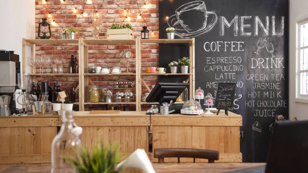

桂謝々は、台北の松山空港の近くにある緑豊かなおしゃれエリア、民生エリアに
“上質感を醸し出しながらも、本場の台湾料理を親しみやすくカジュアルに味わえる店”
として2014年台北に創業しました。
2021年「ミシュランガイド」の台北・台中版において、敦北店が一つ星を獲得しました。
料理は、新鮮な野菜やフルーツをふんだんに取り入れ、しっかり味付けされながらも油を控えたヘルシーでやさしい味わい。
日本人の口にも良く合う逸品揃いです。
落ち着きのある白とを基調とした店内には木製家具を配し、植物と花の醸す台湾らしいリラックスした雰囲気がブレンドされた居心地のよい空間です。
2023/6/30
日頃より桂謝謝のホームページをご覧いただきありがとうございます。
この度、当店のホームページをリニューアルいたしました！
お客様により快適にご利用いただけるようデザインを一新し、内容の拡充を行いました。
今後とも内容の充実を図ると共に、変わらぬご愛顧を賜りますようにお願い申し上げます。

名古屋市千種区今池5-3-2
052-123-4567
営業時間/11:00～20:00